Descriptor Heap
This chapter aims to illustrate better how VK_EXT_descriptor_heap mapping of memory works.
The goal here is not to show a real example or recommended usage, but instead help understand how the API is mapping data to the shader, so that afterwards you can use this API in any way you want.
What is a descriptor
A "descriptor" is just small, opaque, data structure that describes how to access the data for your resource variables in your shader.
This data structure is defined internally by a driver. Prior to VK_EXT_descriptor_buffer/VK_EXT_descriptor_heap this was abstracted away, but now the application has full control to manage these "descriptor" data structures.
As an example, for some drivers a VK_DESCRIPTOR_TYPE_UNIFORM_BUFFER descriptor is just 16 bytes of data. These 16 bytes for the "descriptor" might encode the virtual address, stride and other meta data in order to read the uniform buffer in the shader.
Here is a example of what a "descriptor" could look like:
0x12345678 0xFFFF0001 0x10101010 0x11223344It is not important at all to the developer what the binary data of a descriptor means.
What is important is understanding that unlike Vulkan 1.0, the driver is now just handing you back an opaque, variable sized, internal data structure.
Instead of having a VkDescriptorSet object the driver controls, the application is now responsible to manage that this data is at the correct spot in memory for the GPU to read from.
Multiple descriptors for a single resource
A descriptor is not always a 1-to-1 relationship with resources such as VkBuffer. For example, if there is a 1024 byte VkBuffer, it could be divided up into 3 descriptors by setting different offsets and ranges for it.
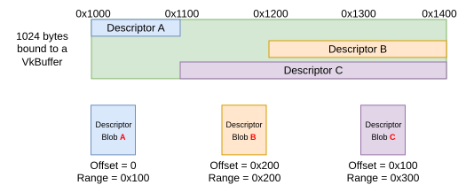
In this image each Descriptor Blob is just an indirection pointing to where in the VkBuffer the shader will access memory.
In Vulkan 1.0, the application was not even aware of these "descriptor blobs", but with VK_EXT_descriptor_heap, the application are now given, and incharge of managing, these "descriptor blobs" to make sure they are in the right spot of memory for the shader to access.
How do we get the descriptor binary blob
For uniform and storage buffers, you first need to create a VkBuffer.
-
With Vulkan 1.0 you would call
vkUpdateDescriptorSetswhere the driver would handle it for you. -
With
VK_EXT_descriptor_bufferyou callvkGetBufferDeviceAddress()to get theVkBufferaddress, then provide it along with a range tovkGetDescriptorEXT(). -
With
VK_EXT_descriptor_heapit is the same, but the address and range are provided tovkWriteResourceDescriptorsEXT()
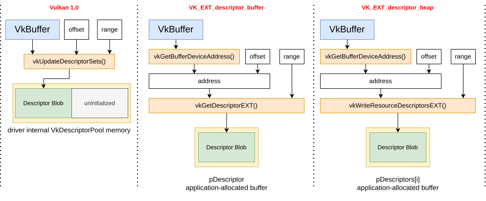
For sampled image, the same idea applies, except there is no VkImageView object for VK_EXT_descriptor_heap anymore.
Instead the VkImageViewCreateInfo is directly handed to vkWriteResourceDescriptorsEXT() where it generates the descriptor there.
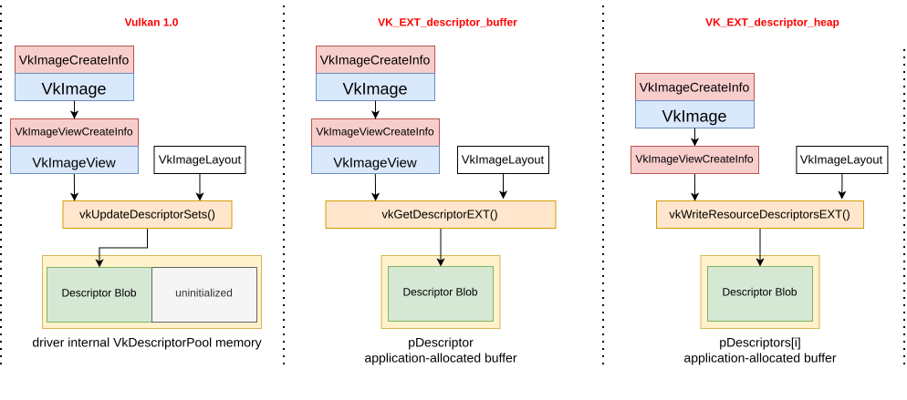
The heap
With VK_EXT_descriptor_heap there are explicitly two heaps:
-
one for samplers
-
one for other resources (buffers, images, acceleration structures, etc)
The heap is not a 1:1 relationship with VkDescriptorSets and instead should contain all descriptors used in a command buffer.
Allocating the heap
After we have our various descriptors, we need a heap to transfer them to. This is simply done by allocating a VkBuffer with the VK_BUFFER_USAGE_DESCRIPTOR_HEAP_BIT_EXT (and VK_BUFFER_USAGE_SHADER_DEVICE_ADDRESS_BIT) usage flags.
This VkBuffer is now your descriptor heap, the only thing left is to move your descriptor binary blobs into it.
Getting descriptors in the heap
After calling vkWriteResourceDescriptorsEXT() to get the descriptor data, we still need to get that data into the heap memory.
There are 3 ways to copy the descriptors into the heap memory:
-
If your heap memory is host visible, then using
vkMapMemory()on the heap, the descriptors can be copied with a simplememcpy(). -
If your heap memory is host visible, set the
vkWriteResourceDescriptorsEXT() pDescriptors→addressto point directly to the descriptor heap. -
The descriptors can also be transfered on the GPU. This could be done with something like
vkCmdCopyBuffer()or even writting it from inside a shader directly.
|
Make sure if writing to the heap on the GPU, prior to reading descriptors from the heap on the GPU, to properly synchronized with |
Descriptor Size
Each VkDescriptorType is going to have a different size for its descriptor blob
For simplicity, there are few VkPhysicalDeviceDescriptorHeapPropertiesEXT values that can be used:
-
samplerDescriptorSize -
bufferDescriptorSize -
imageDescriptorSize
For some specific use cases it is useful to be able to pack specific descriptors into memory more tightly than this when the implementation allows for this with vkGetPhysicalDeviceDescriptorSizeEXT.
Binding to the Command Buffer
When recording the vkCommandBuffer we need an equivalent to vkCmdBindDescriptorSets() (or vkCmdBindDescriptorBuffersEXT()).
There are 2 basically identical calls, one for each heap - vkCmdBindSamplerHeapEXT() and vkCmdBindResourceHeapEXT()
The provided heapRange field provides the memory range of the heap to bind.
There is also a "reserved range" provided. This is memory that the driver will use for internal descriptors it needs. (It is very invalid to access it.)
|
The |
The following shows an example (with simple values) of binding both heaps:
vkCmdBindResourceHeapEXT(
heapRange.address = 0x1000
heapRange.size = 0x80
reservedRangeOffset = 0x40
reservedRangeSize = 0x20
);
vkCmdBindSamplerHeapEXT(
heapRange.address = 0x4020
heapRange.size = 0x60
reservedRangeOffset = 0
reservedRangeSize = 0x20
);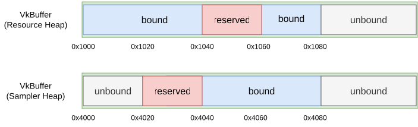
This also shows how the application has control of where the driver’s reserved range ends up.
Rebinding a new heap
When you call vkCmdBindResourceHeapEXT() multiple times in a command buffer, the driver has to swap heaps, which is costly and should be avoided.
The goal of VK_EXT_descriptor_heap is that now the application knows where the heap is bound, it can copy the memory to the correct offset in the heap.
Mapping the Heap to exisiting shaders
To allow applications to easily transition to using VK_EXT_descriptor_heap, no shaders have to be modified to use it.
VkDescriptorSetLayout and VkPipelineLayout are no longer required with VK_EXT_descriptor_heap, instead VkShaderDescriptorSetAndBindingMappingInfoEXT is used to map the location in the bound heap to the DescriptorSet/Binding decoration in the SPIR-V.
This mapping is provided at vkCreate*Pipelines() or vkCreateShadersEXT() time.
VkDescriptorMappingSourceEXT
The first time you look at VkDescriptorMappingSourceEXT and all the options, it can be bit overwhelming. It is best to mentally categorize them into 3 types:
-
Heap Access
-
VK_DESCRIPTOR_MAPPING_SOURCE_HEAP_WITH_CONSTANT_OFFSET_EXT
-
VK_DESCRIPTOR_MAPPING_SOURCE_HEAP_WITH_PUSH_INDEX_EXT
-
VK_DESCRIPTOR_MAPPING_SOURCE_HEAP_WITH_INDIRECT_INDEX_EXT
-
VK_DESCRIPTOR_MAPPING_SOURCE_HEAP_WITH_INDIRECT_INDEX_ARRAY_EXT
-
-
Inline Access
-
VK_DESCRIPTOR_MAPPING_SOURCE_RESOURCE_HEAP_DATA_EXT
-
VK_DESCRIPTOR_MAPPING_SOURCE_PUSH_DATA_EXT
-
VK_DESCRIPTOR_MAPPING_SOURCE_PUSH_ADDRESS_EXT
-
VK_DESCRIPTOR_MAPPING_SOURCE_INDIRECT_ADDRESS_EXT
-
-
Shader Record (Ray Tracing)
-
VK_DESCRIPTOR_MAPPING_SOURCE_HEAP_WITH_SHADER_RECORD_INDEX_EXT
-
VK_DESCRIPTOR_MAPPING_SOURCE_SHADER_RECORD_DATA_EXT
-
VK_DESCRIPTOR_MAPPING_SOURCE_SHADER_RECORD_ADDRESS_EXT
-
VkDescriptorMappingSourceEXT Heap Access
To try and give a visual example how these mappings work, first let’s setup our heap with 8 descriptors pointing to 8 possible payloads of data.
In this example, we have a single uniform buffer storing 8 uvec4
We are also using a descriptor to reference each of them separately in order to help make it obvious in the below example which data is actually read.
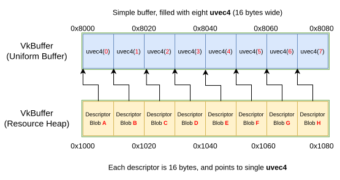
|
The fact that both the descriptor and the uvec4 are both are 16 bytes is just a coincidence. Real applications would not only bind 16 bytes of memory per descriptor as that would be wasteful. |
From here, our shader will attempt to read from 2 descriptors from an array:
// VkDescriptorSetAndBindingMappingEXT::descriptorSet = 0;
// VkDescriptorSetAndBindingMappingEXT::firstBinding = 0;
// VkDescriptorSetAndBindingMappingEXT::bindingCount = 2;
layout(set = 0, binding = 0) uniform UBO {
uvec4 payload;
} u_buffers[2];
void main() {
// This example is to figure out what value x and y would be
uvec4 x = u_buffers[0].payload;
uvec4 y = u_buffers[1].payload;
}VK_DESCRIPTOR_MAPPING_SOURCE_HEAP_WITH_CONSTANT_OFFSET_EXT
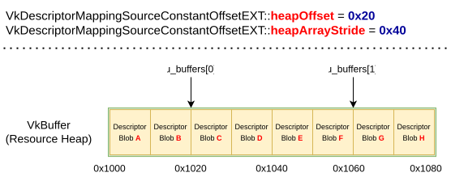
The results are: x == vec4(2) and y == vec4(6)
The formula is offset = heapOffset + (shaderIndex * heapArrayStride)
shaderIndex, in this and all below cases, is just each index into our descriptor array (u_buffers[]) since we are at set/binding 0
u_buffers[0] offset = 0x20 + (0 * 0x40) u_buffers[1] offset = 0x20 + (1 * 0x40)
VK_DESCRIPTOR_MAPPING_SOURCE_HEAP_WITH_PUSH_INDEX_EXT
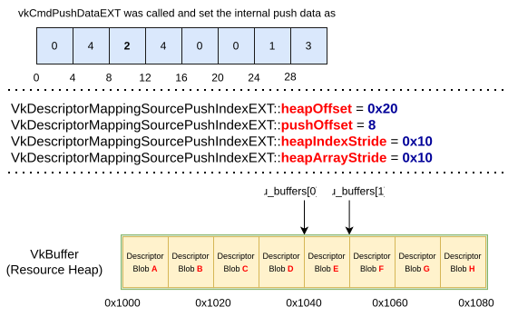
The results are: x == vec4(4) and y == vec4(5)
The formula is offset = heapOffset + (pushIndex * heapIndexStride) + (shaderIndex * heapArrayStride)
The pushOffset = 8 sets pushIndex to 0x10
u_buffers[0] offset = 0x20 + (0x10 * 2) + (0 * 0x10) u_buffers[1] offset = 0x20 + (0x10 * 2) + (1 * 0x10)
VK_DESCRIPTOR_MAPPING_SOURCE_HEAP_WITH_INDIRECT_INDEX_EXT
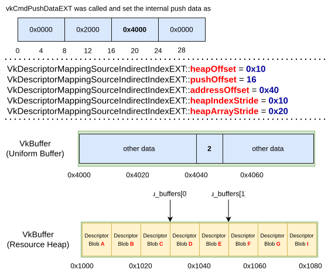
The results are: x == vec4(3) and y == vec4(5)
The formula is offset = heapOffset + (indirectIndex * heapIndexStride) + (shaderIndex * heapArrayStride)
The pushOffset = 16 sets indirectAddress to 0x4000 which must be a valid VkDeviceAddress of memory backing some VkBuffer. The addressOffset of 0x40 is applied to that indirectAddress to get 0x4040. We see at 0x4040 the uint32_t value of 0x20, which becomes the indirectIndex.
u_buffers[0] offset = 0x10 + (0x20 * 1) + (0 * 0x20) u_buffers[1] offset = 0x10 + (0x20 * 1) + (1 * 0x20)
VK_DESCRIPTOR_MAPPING_SOURCE_HEAP_WITH_INDIRECT_INDEX_ARRAY_EXT
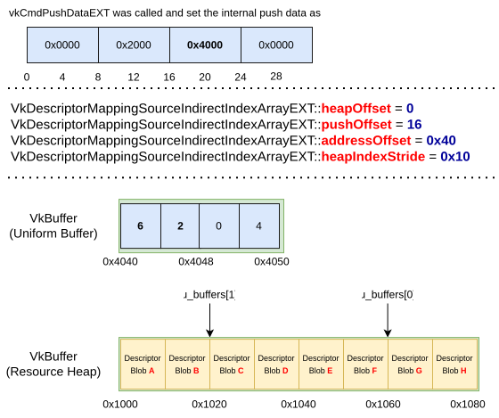
The results are: x == vec4(6) and y == vec4(2)
The formula is offset = heapOffset + (indirectIndex × heapIndexStride)
Like the previous example, the pushOffset = 16 sets indirectAddress to 0x4000 plus addressOffset of 0x40 is applied to that indirectAddress to get 0x4040.
From 0x4040, each shaderIndex jumps to the next uint32_t and gets the offset from the indirect uniform buffer.
u_buffers[0] offset = 0x00 + (0x20 * 1) u_buffers[1] offset = 0x00 + (0x60 * 1)
VkDescriptorMappingSourceEXT Inline Access
For these mappings, it is similar to VK_EXT_inline_uniform_block where the data is read without a descriptor.
There 2 main restrictions are these have to be Uniform Buffers (read only) and there is no arrays of descriptors in the shader.
The new shader code looks like:
// VkDescriptorSetAndBindingMappingEXT::bindingCount = 1;
layout(set = 0, binding = 0) uniform UBO {
uvec4 payload[2];
} u_buffer;
void main() {
// This example is to figure out what value x and y would be
uvec4 x = u_buffer.payload[0];
uvec4 y = u_buffer.payload[1];
}VK_DESCRIPTOR_MAPPING_SOURCE_RESOURCE_HEAP_DATA_EXT
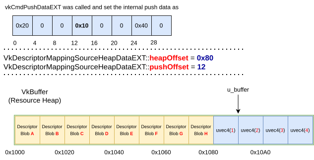
The results are: x == vec4(2) and y == vec4(3)
The the pushOffset = 12 gets the offset 0x10 which is applied to the heapOffset of 0x80 to make a final offset of 0x90
From an offset of 0x90 the remaining offsets depends on where the shader accesses into u_buffer.
Since payload[1] is has a 16 (0x10) byte offset into the u_buffer struct, it effectively is grabbing 0x90 + 0x10 here.
VK_DESCRIPTOR_MAPPING_SOURCE_PUSH_DATA_EXT
Using the same shader as the previous example, this just removes the heap and loads directly from the push data.
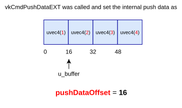
The results are: x == vec4(2) and y == vec4(3)
Untyped shader model
The above usage of VkShaderDescriptorSetAndBindingMappingInfoEXT was designed to allow backwards compatibility.
There is also a new "untyped" way to use VK_EXT_descriptor_heap. The word "untyped" refers to using the VK_KHR_shader_untyped_pointers extension to have "untyped pointers" to the descriptors.
Using this GLSL as an example:
// Typed
//
// Standard way to provide the set/binding location
layout(set = 0, binding = 0) buffer SSBO {
vec4 payload;
} s_buffers[];
layout(set = 0, binding = 1) buffer UBO {
vec4 payload;
} u_buffers[];
// -----
// Untyped
//
// Both are bound to the heap
layout(descriptor_heap) buffer SSBO {
vec4 payload;
} s_buffers[];
layout(descriptor_heap) uniform UBO {
vec4 payload;
} u_buffers[];Mapping the Heap to Untyped Pointers shaders
With "untyped" the descriptor array is just bound where the heap is.
If the shader code looks like:
// VkPhysicalDeviceDescriptorHeapPropertiesEXT::bufferDescriptorSize == 16 (0x10)
layout(descriptor_heap) buffer SSBO {
vec4 payload;
} s_buffers[];
void main() {
s_buffers[6].payload = vec4(1.0);
}the mapping now looks like:
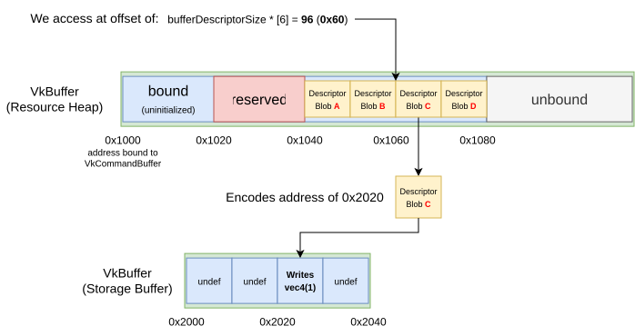
Mastering strides for each descriptor type
As mentioned above, descriptors will have different sizes, this means the array stride is going to be different for each descriptor array in the shader.
|
If coming from DX12/HLSL, all the descriptor array are the same size, while this may be a bit more convenient, it is much more wasteful of memory. |
// VK_DESCRIPTOR_TYPE_SAMPLER
layout(descriptor_heap) uniform sampler Samplers[];
// VK_DESCRIPTOR_TYPE_SAMPLED_IMAGE
layout(descriptor_heap) uniform texture2D Textures[];
// VK_DESCRIPTOR_TYPE_STORAGE_BUFFER
layout(descriptor_heap) buffer ssbo {
uint data;
} Buffers[];Here if we would access Samplers[3], Textures[3], or Buffer[3] the offset from the heap starting address can be different.
In this example if the descriptor sizes are:
-
bufferDescriptorSize = 16
-
samplerDescriptorSize = 32
-
imageDescriptorSize = 64
we would use that size as an array stride inside the heap.
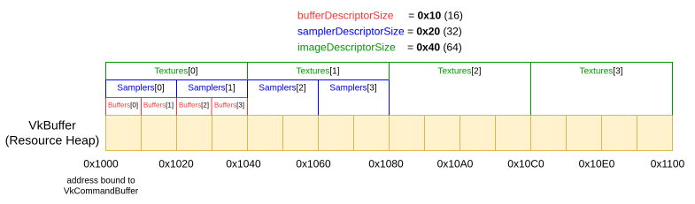